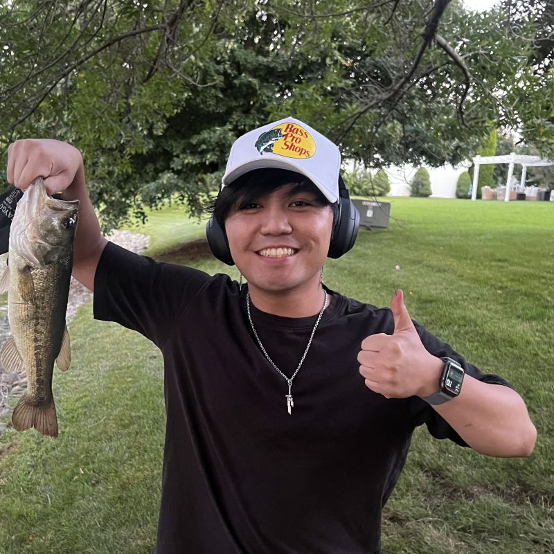

Preferred Name: Niko
Lewis Email: nikoasalvador@lewisu.edu
Discord: neekneeks
Hi everyone, my name is Niko. I have one younger brother and a two-year-old dog named Joji. He is a white Maltipoo (Maltese + Poodle) and causes all sorts of trouble. In my free time I enjoy hanging out with my friends, playing guitar, and listening to music. My favorite artist is Mac Miller. I have been interested in coding for a really long time and I want to make a career out of it so I decided to pursure Computer Science as my major.
Lifelong interest in programming and technology
I love Spam!
Last Updated: 05/09/2025
Curly apostrophe used in header